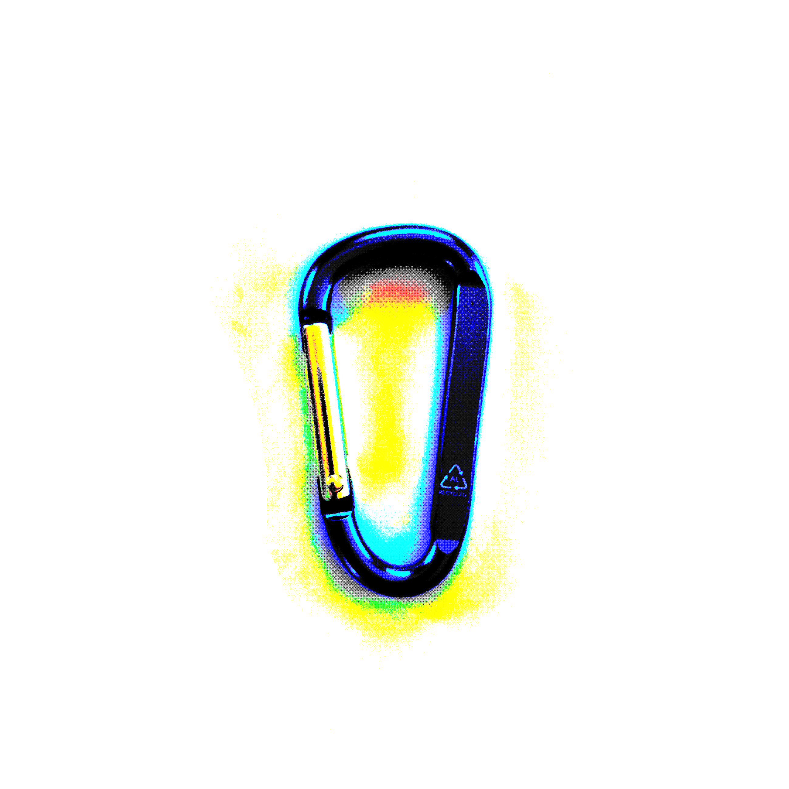

Экспериментальный, приватный, вдохновлённый старыми проектами minecraft-сервер.
korobin, как было сказано ранее - экспериментальный, приватный, вдохновлённый старыми проектами minecraft-сервер, участником которого не сможет стать случайный грифер. Мы хотим разрушить ядовитую атмосферу анархии, и восстановить ту самую приятную, ностальгическую атмосферу дрефних майнкрафт-серверов.
Это сделано намеренно, чтобы вы как раньше имели возможность беситься из-за высокого пинга.
Никаких донатных кейсов, никаких донатных преимуществ в игре, никаких донатных наименований, НИКАКИХ ДОПОЛНИТЕЛЬНЫХ ШАХТ И ТАК ДАЛЕЕ!
Не всем можно доверять наслово, когда они говорят "Я точно не буду доставать игроков!". Платный проход даёт гарантию, что игрок будет относиться к серверу как к своему детищу.
Сам создатель проекта
И, возможно, ты...
Как попасть к нам?
Шаг №1: Напишите
Напишите в личные соо своё обращение о желании вступить в наш проект. Троллинг будет игнорироваться.
Шаг №2: Ждите ответа
Тщательно проверяйте свой e-mail, с которого вы отправили нам письмо. Или, если вы указали другие сети в письме, проверяйте их. Наши письма идут только из адреса korobin.label@proton.me
Шаг №3: Принятие или отказ?
Когда увидите письмо от нас - смело открывайте! Первым словом в письме будем "Принятие" или "Отказ".
Выпало первое? Очевидно, что вы стали участником нашего проекта, а в письме мы обязательно вам вышлем одноразовые ссылки для вступления в наши чаты.
Выпало второе? Мы постараемся разложить вам всё по полочкам, но не обещаем. Но вы всё ещё проделали большую работу!